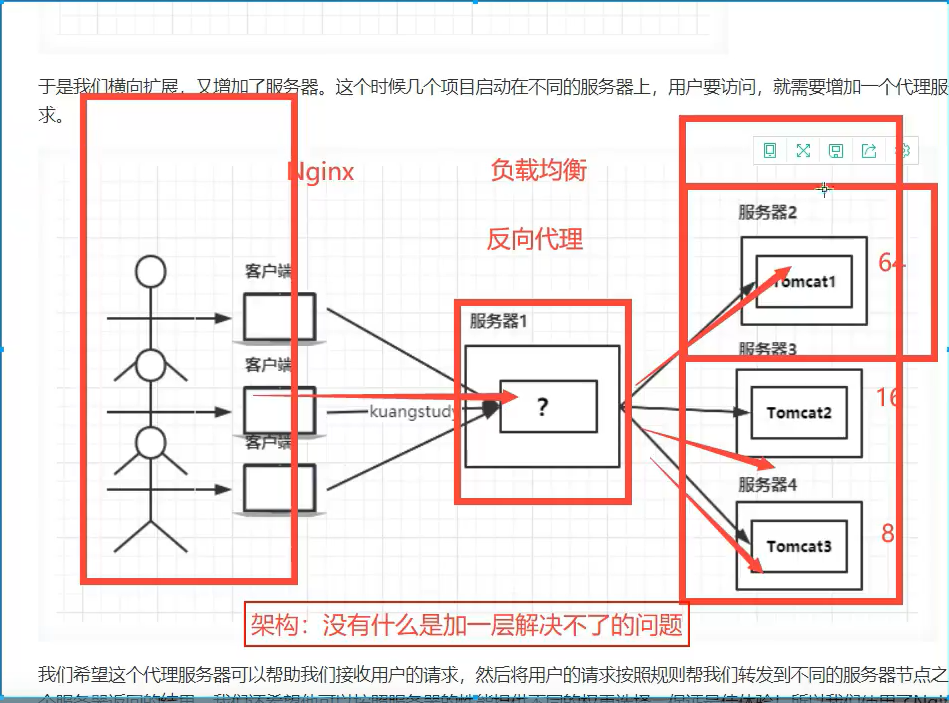
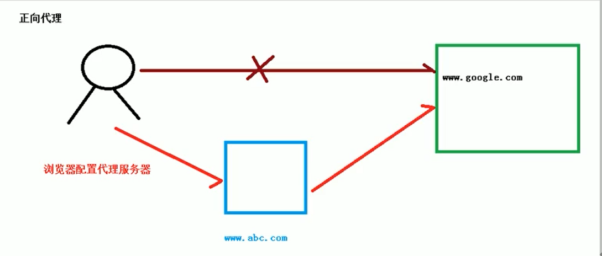
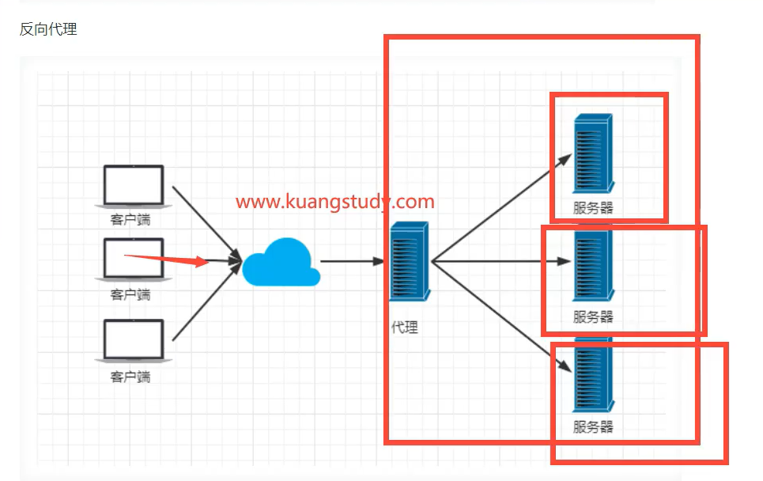
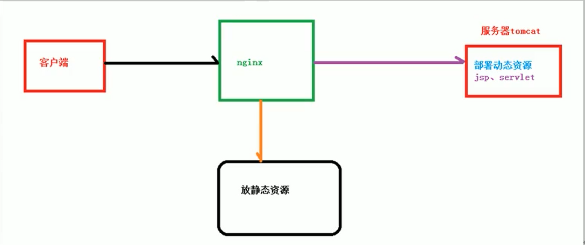

Nginx
Nginx

正向代理
正向代理装在客户端
在客户端配置代理服务器，通过代理服务器进行互联网访问！

比如翻墙，在客户端装了一个VPN,你想翻墙的时候他会先访问香港的服务器，然后香港的服务器再去访问外网，香港的服务器得到数据后，再把数据转发给你，这就是正向代理
反向代理
反向代理装在后端
反向代理其实客户端是无感知的，因为客户端不需要任何配置就可以访问，我们只需要将请求发送到反向代理服务器，由反向代理服务器去选择目标服务器获取数据后，在返回给客户端，此时反向代理服务器和目标服务器对外就是一个服务器，暴漏的是代理服务器地址，隐藏了真实服务器IP地址。

动静分离
为了加快网站的解析速度，可以把动态页面和静态页面由不同的服务器来解析，加快解析速度。降低原来单个服务器的压力

配置文件
1 | |
注意
=：用于不含正则表达式的uri前，要求请求字符串与uri严格匹配，如果匹配成功就停止向下搜索并立即处理该请求
~：用于表示uri包含正则表达式，区分大小写。
~*：用于表示uri包含正则表达式，并且不区分大小写
^~:用于不包含正则表达式的uri前，要求Nginx服务器找到标识uri和请求字符串匹配度最高的location后，立即使用此location处理请求，而不使用location块中的正则uri和请求字符串做匹配。
例如：location ^~ /images/ location ~* .(gif|jpg|jpeg)$这样，如果有请求/images/1.jpg，nginx如何决
定去进行哪个location中的操作呢？结果取决于标识符^
，因为^要求匹配到立马执行，所以匹配到/images/后会立马执行搜索，并不会接着匹配了！！
注意：如果uri包含正则表达式，则必须要有~ 或者 ~* 标识
if指令
所有的Nginx内置变量都可以通过if指令和正则表达式来进行匹配，并且根据匹配结果进行一些操作，如下
1 | |
本博客所有文章除特别声明外，均采用 CC BY-SA 4.0 协议 ，转载请注明出处！